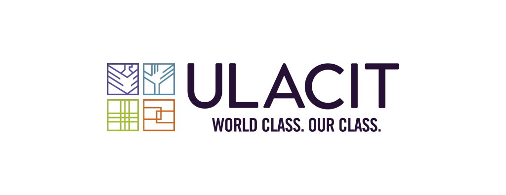

Microcredencial en Inteligencia Artificial y Análisis de Datos
Código: 92-0031 | Cuatrimestre 1CO2026
Curso virtual de 15 semanas enfocado en desarrollar competencias para liderar iniciativas de ética y gobernanza de datos en inteligencia artificial. Los estudiantes aprenderán a identificar y aplicar principios éticos fundamentales, marcos regulatorios y mejores prácticas para la gestión responsable de datos.
Propuesta y marco teórico
Entrega: Semana 7
Desarrollo completo
Entrega: Semana 11
Informe final y presentación
Entrega: Semana 15